Announcing Humming: Fast, Flexible Kernels for Quantized Inference
Ant Group and the vLLM community are open-sourcing Humming, a general-purpose, high-performance kernel library for quantized inference. Humming offers the following features:
- Broad device support: Supports NVIDIA GPU architectures from Turing onward, along with CUDA-compatible devices such as T-Head's Zhenwu 810E.
- Extensive quantization support: A unified architecture supports diverse combinations of weight and activation formats for dense and MoE workloads, covering a wide range of integer and floating-point types, bit widths, and scaling schemes.
- Strong execution performance: Significantly outperforms existing implementations from vLLM Marlin, FlashInfer, and DeepGEMM across many representative workloads.
Repository: github.com/vllm-project/humming
Background
As models and inference workloads grow, memory capacity, memory bandwidth, and compute costs increasingly constrain deployment. This is especially apparent in MoE models: each token activates only a subset of experts, but the full set of weights still needs to be stored. DeepSeek-V3, for example, has 671 billion parameters, with 37 billion activated per token. Quantization lowers the precision of weights and activations to reduce memory usage and data movement, and can also improve compute efficiency.
Quantization requirements vary across models and GPU generations. Common configurations include WNA16, W8A8, W4A8, and W4A4, where W and A specify weight and activation bit widths, and N denotes a variable weight bit width. Even at the same precision, schemes such as INT4 and NVFP4 differ in numeric format and scaling. Scaling granularity, scale representation, group size, and symmetric or asymmetric quantization further expand the configuration space.
These storage and compute savings only translate into lower latency and higher throughput with efficient kernels. Prefill, decode, and varying MoE expert loads place different demands on compute and memory. Kernels must adapt to these workloads while keeping conversion, dequantization, and scheduling overhead low.
Developing and integrating a dedicated kernel for every combination creates a growing maintenance burden. Each addition can require its own weight preprocessing, kernel selection, framework adapters, and tests. Optimizations must then be carried across multiple implementations.
Humming addresses this problem by separating quantization descriptions from execution choices and composing kernels from shared components.
General-Purpose Architecture
Humming's execution path has three parts: represent the quantized computation, select configurations for the hardware and workload, and compile a kernel from CUDA components.
A Unified Quantization Representation
Models exported by different quantization tools vary in numeric format, parameter organization, and weight layout. Humming converts supported export formats into the Humming standard format: a common quantization description with consistently organized weights, scales, zero points, and other tensors.
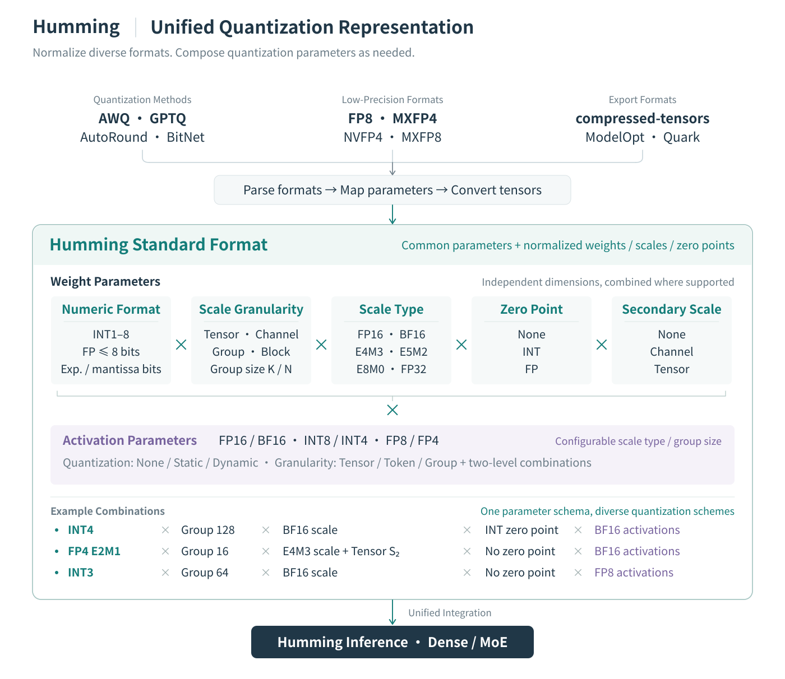
This representation preserves each scheme's quantization semantics while describing weight format, scaling granularity, scale data type, zero points, and secondary scales as separate parameters. Activations have their own numeric format and quantization settings. These parameters can be combined subject to format and hardware constraints.
For example, groupwise INT4 weights can be paired with BF16 activations. Low-precision floating-point weights with different scaling schemes use the same parameter system. This gives inference frameworks a common interface for models from different sources.
Tuning and JIT Compilation for Each Workload
The standard format provides a common representation across export formats. Preprocessing then validates parameters, pads dimensions, and repacks these tensors into layouts suited to the target kernel. Humming combines the quantization description with the weight shape, GEMM type, target GPU, and compute options to configure execution.
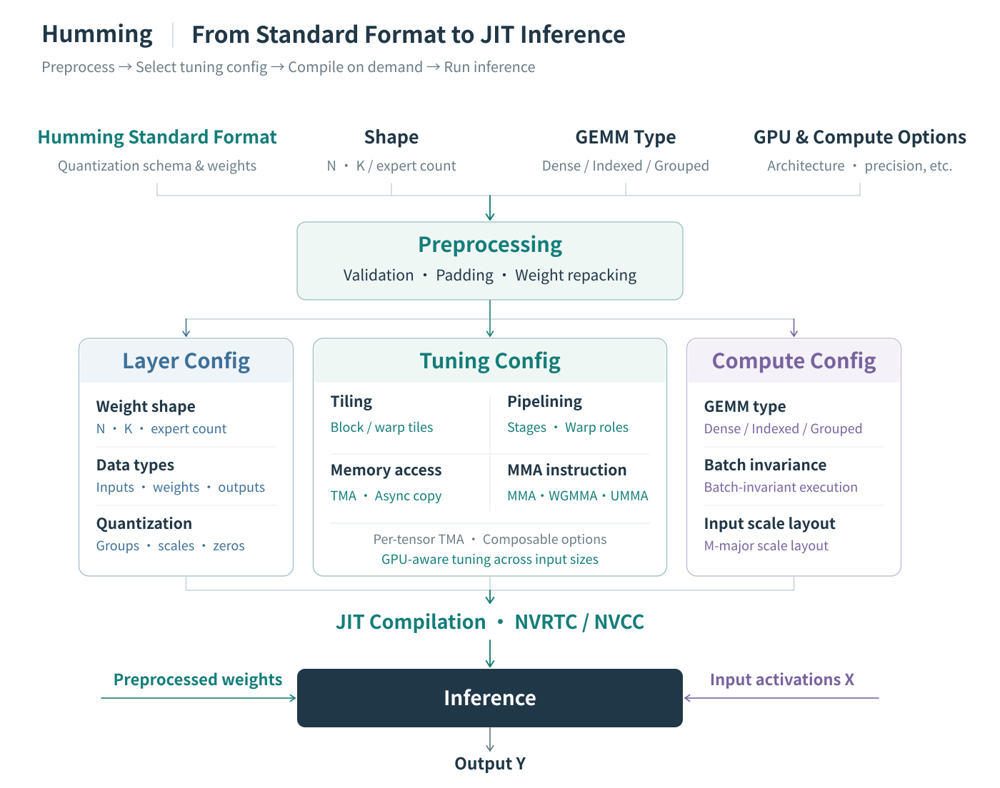
Three configurations describe the kernel:
- Layer Config describes tensor shapes, data types, quantization parameters, and the target architecture.
- Compute Config specifies the GEMM type and computation options, such as batch invariance and input scale layout.
- Tuning Config selects tile shapes, pipeline stage counts, warp specialization, memory access, and MMA instructions. It also controls concurrency and scheduling; TMA can be configured per tensor.
By default, Humming selects tuning configurations using device-specific heuristics. It can prepare different configurations for ranges of input sizes and dispatch to the appropriate kernel at runtime.
Humming’s unified architecture makes it straightforward to tune
execution parameters and select pipelines for different workloads. At
small batch sizes, a multistage pipeline using asynchronous copies
(cp.async)
and MMA can outperform a pipeline built around TMA and UMMA. At larger
batch sizes, TMA and UMMA can offer better throughput. Humming
accommodates both execution paths within the same configuration and
component framework, allowing it to select the more effective strategy
for each workload.
Together, the three configurations specialize kernels compiled with NVRTC or NVCC. Compiled kernels are cached for reuse. Inference combines the selected kernel with the preprocessed weights and runtime activations.
Shared CUDA Components Across Formats and Architectures
At the CUDA level, Humming organizes task scheduling, data movement, dequantization and scaling, Tensor Core computation, and output processing into reusable components. It provides standard, warp-specialized, and dedicated UMMA pipelines. These pipelines share compatible components while using the dataflow and synchronization required by each execution strategy.
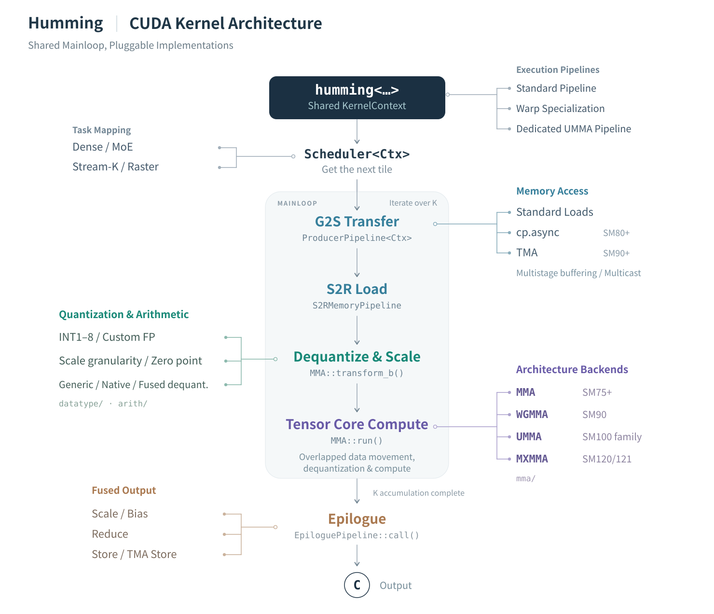
Each group of components handles a different source of variation:
- Numeric processing handles quantization formats. Decoding and arithmetic components account for bit width, integer or floating-point representation, scales, and zero points. Dequantization and scaling are integrated into the kernel's computation.
- Memory and compute backends handle GPU architectures. Humming selects data movement and Tensor Core implementations for the target architecture, using asynchronous copies, TMA, and multicast where supported.
- Task mapping and scheduling handle dense and MoE workloads. Each GEMM type uses the appropriate scheduling logic. Scaling and bias addition can also be fused into the output stage.
JIT compilation combines these components according to the three configurations and eliminates unused implementation branches. A new format or architecture can therefore be supported by extending the relevant components. Improvements to a shared component benefit compatible configurations, reducing the duplicated development and maintenance of separate specialized kernels.
This CUDA implementation is lightweight and avoids heavyweight kernel framework dependencies, keeping JIT compilation fast as well. In our single W4A16 kernel compilation test on an H200 server with CUDA 13.4, compilation time dropped from 23.35 seconds for CUTLASS with NVCC to 1.82 seconds for Humming with NVCC or 1.88 seconds with NVRTC, with compilation caches disabled. This reduces the cost of preparing kernels for new workloads and makes iterative tuning more practical. Humming also compiles kernels in parallel during model warmup. In our tests, compiling and loading the kernels covering all supported M sizes for a single layer's GEMM takes only about 2–4 seconds, making it practical to prepare multiple specialized kernels before inference.
Performance Tuning Based on Device Parameters
Humming deeply optimizes kernels using both the GEMM configuration and device parameters. Quantization formats, matrix shapes, GPU instruction support, SM count, shared memory, and register resources all inform execution choices, turning the benefits of low-bit storage into practical inference performance.
Efficient W4A8-MXFP4 inference on existing GPUs. Architectures before Blackwell lack native MXFP4 Tensor Core support, and conventional W4A8-MXFP4 kernels can be limited by dequantization and scaling overhead at larger M. Humming addresses this with a fast MXFP4-to-INT8/FP8 dequantization path that converts MXFP4 weights into a supported compute format within the kernel. In this setting, the path substantially outperforms conventional W4A8 implementations at small M and approaches W8A8 performance at large M. GPUs such as H200 can therefore run high-performance W4A8-MXFP4 kernels while retaining the storage benefits of 4-bit weights.
Dequantization paths matched to each device. The same quantization format can benefit from different implementations across GPUs. Humming selects decoding, numeric conversion, and scaling paths for the device, pairing them with suitable memory access and compute pipelines to reduce instruction and data movement overhead. Shared components make these optimizations reusable across compatible dense and MoE kernels.
Extensive tuning controls with device-specific heuristics. Humming exposes tile shapes, pipeline stage counts, warp specialization, TMA, MMA instructions, CTA concurrency, and Stream-K scheduling. Device-specific heuristics combine GEMM shapes with resource constraints to balance parallelism, data reuse, and pipeline overhead, selecting different execution strategies as input sizes change. Developers can use the default configurations directly or refine them for particular models and deployment scenarios.
Results
Broad Device Support
Humming's unified architecture enables broad GPU support. For NVIDIA GPUs, Humming fully supports every architecture from Turing onward, bringing a common quantized computing framework to multiple generations of hardware.
The unified JIT architecture also makes it straightforward to extend Humming to other GPUs compatible with CUDA programming. Humming already fully supports T-Head's Zhenwu 810E, bringing its shared kernels and tuning capabilities to more hardware platforms.
The figure below shows the high-performance activation types supported by Humming on each device: types that can take full advantage of the device's peak compute capabilities. Some types omitted from the figure can still run through other instruction paths. For example, UMMA instructions on the B300 (SM103) no longer support INT8 computation, but earlier MMA instructions can still execute INT8 GEMM, with substantially lower performance.
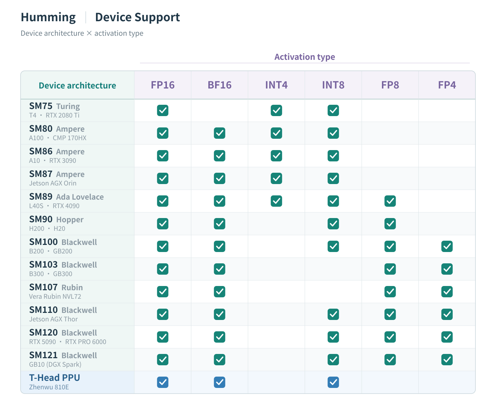
Quantization Support
Humming's support for quantization types depends primarily on compatibility between activation and weight types. Its unified quantization representation and kernel architecture allow a wide range of integer and floating-point weight formats to work with activations at different precisions, providing flexible choices for model precision and deployment performance.
The figure below shows the weight and activation type combinations supported by Humming. Rows represent weight types, columns represent activation types, and checks indicate supported combinations. Together with the device support matrix above, it outlines the high-performance quantized computation paths available on each hardware architecture.
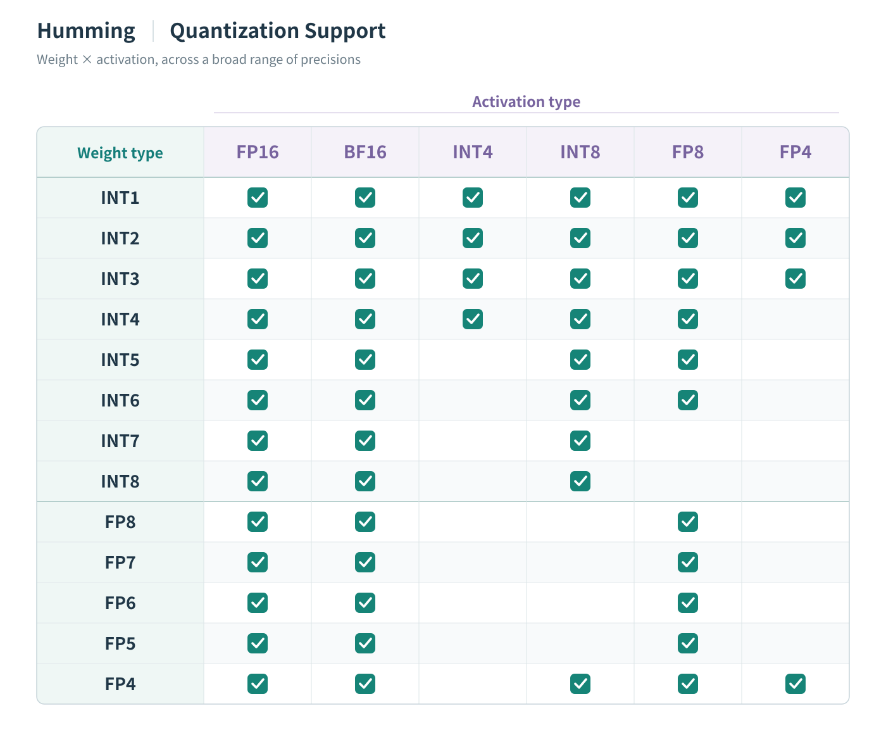
Humming also supports a special floating-point format with zero
exponent bits, whose representable values match those of symmetric
integers at the same bit width. For example, INT8 excluding -128
and float8e0m7
both represent integers from -127
to 127.
Weights in this format have the same activation type compatibility as
INT weights of the same bit width. Humming automatically converts
eligible symmetric integer weights to this format for faster
dequantization.
The community has also uncovered two hidden capabilities in Blackwell Tensor
Cores: native support for float4e0m3
and float8e3m4,
two special floating-point formats that are not exposed in the PTX type
system. Humming supports these features across all Blackwell
architectures, including datacenter SM100/SM103 and SM120/SM121 devices
for workstations and personal computing. Both formats are integrated
into its unified quantization and compute framework, providing more
native compute options for low-precision inference. Rubin does not
support these two hidden Tensor Core formats, so support for these
native compute paths does not extend to Rubin.
Performance
The kernel microbenchmarks below, run by the vLLM community, measure GEMM performance with M covering every power of two from 1 to 8192. Kernels are fully warmed up and timed independently with a cold L2 cache, with a brief pause between samples. MoE speedups use the sum of Gateup and Down GEMM latencies. Each figure identifies its baseline, quantization formats, matrix dimensions, and software versions.
WnA16
WnA16 is one of the most versatile and widely used approaches to quantized inference. It combines low-bit weights with FP16/BF16 activations, reducing weight storage and memory traffic while making use of widely available 16-bit compute capabilities. This makes it suitable for many GPU generations and model deployment scenarios. The W4A16 family has attracted particular interest from the community and is a major focus of Humming's optimization work.
For dense W4A16, Humming matches or outperforms vLLM Marlin in most tested configurations, with substantial gains on several Hopper and Blackwell workloads. The figure below uses cuBLAS as a common baseline. At small batch sizes, Humming delivers roughly 3–4× speedups on several devices. As batch size grows, it continues to use the hardware efficiently, reaching approximately twice Marlin's performance on large-batch H200 workloads and more than three times its performance in some B300 cases.
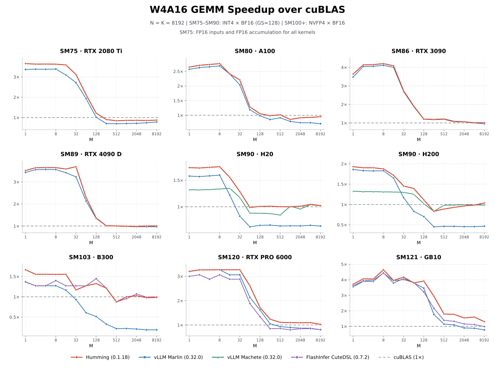
These gains extend to MoE. Humming provides efficient Indexed and Grouped paths for workloads where tokens are distributed across experts and the amount of work per expert changes with the load. In the figure below, MXFP4 W4A16 on H20 and H200 reaches roughly twice Marlin's performance in several medium-to-large batch cases. On B300, the MXINT4 and NVFP4 paths achieve even larger gains at large batch sizes, with the Grouped path reaching approximately 5×. Results on SM120 and SM121 also show Humming outperforming Marlin and the corresponding FlashInfer implementations across a range of workloads.
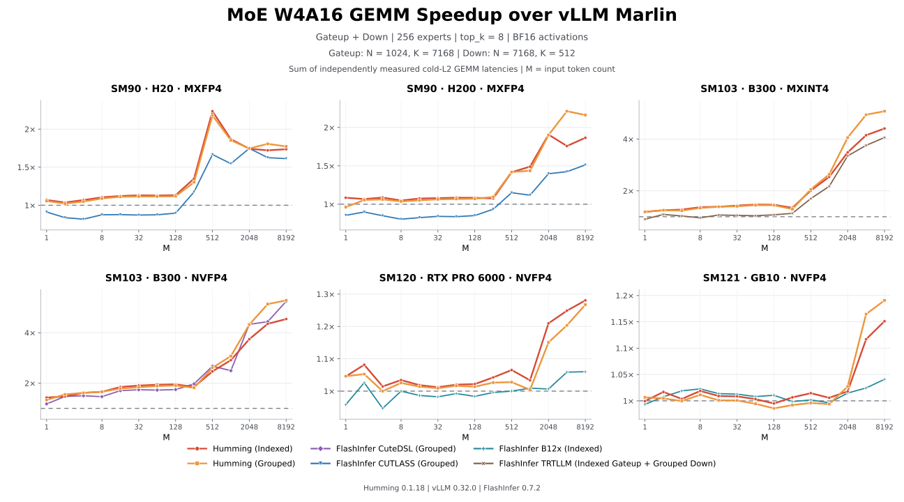
Humming's optimizations also extend beyond W4A16 to other WnA16 combinations. Its shared dequantization and compute paths deliver strong performance for integer and floating-point weights at different bit widths, including INT1, INT2, INT3, and FP4 through FP8. The following figure shows broad gains across these formats at small and medium batch sizes, with the lowest-bit configurations on SM120 exceeding 5× the performance of BF16 cuBLAS. At large batch sizes on H20, multiple bit widths maintain compute efficiency close to BF16 cuBLAS. This gives models finer-grained choices among precision, storage, and throughput.
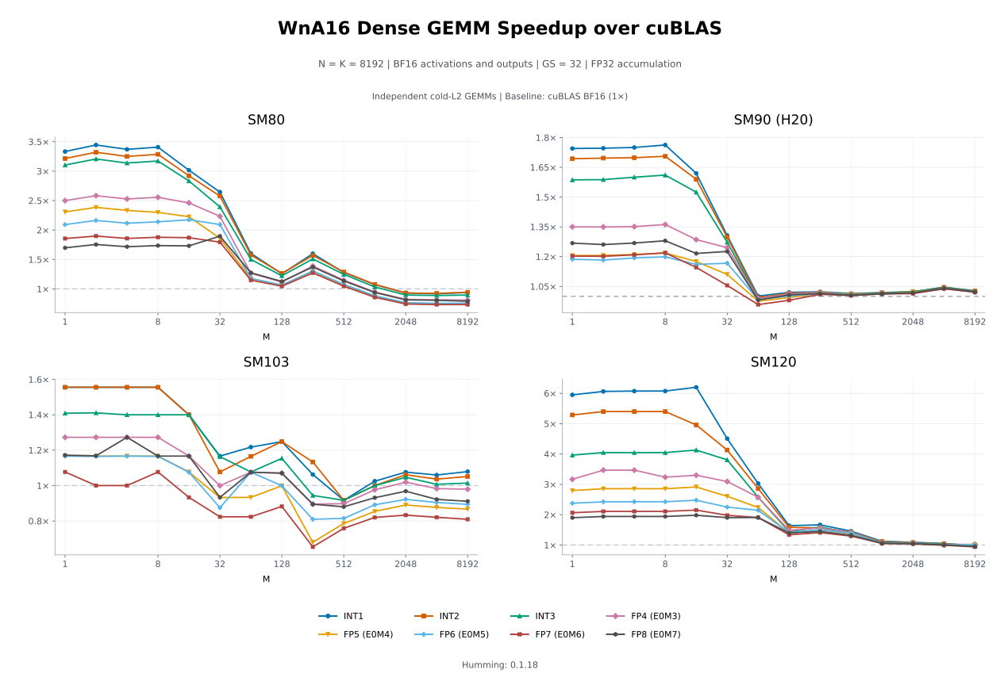
W8A8 / W4A8 / W4A4
With Hopper, FP8 W8A8 with blockwise scaling became a mainstream approach to high-performance quantized inference. Humming further improves this established compute path by optimizing data movement, scaling, and expert scheduling together. The left column below shows W8A8 results on H20 and H200. At small and medium batch sizes, Humming reaches approximately 2.6× and 2.5× the performance of DeepGEMM Contiguous, respectively, with competitive performance from both Indexed and Grouped layouts.
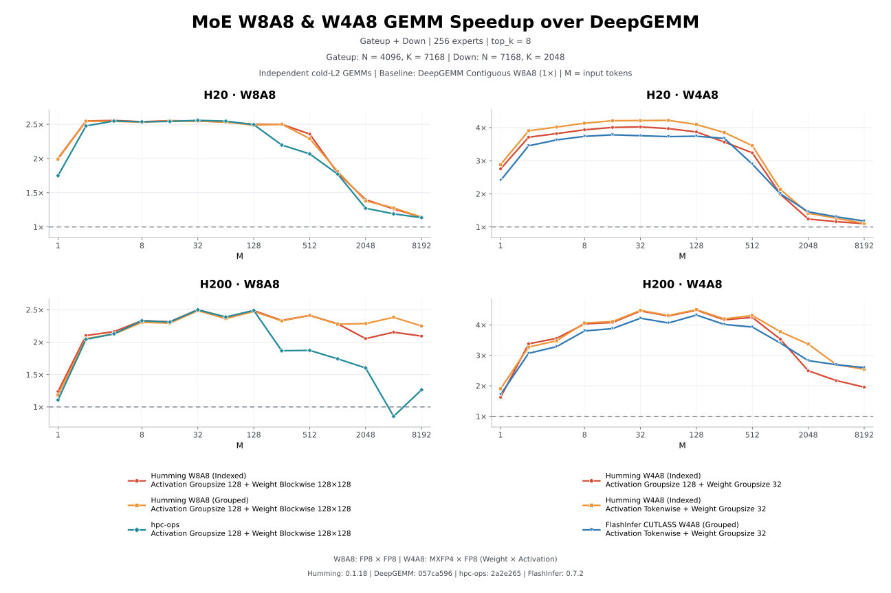
As more models adopt native MXFP4 weight quantization, converting the smaller weight footprint into practical inference gains becomes increasingly valuable. Humming addresses this with an efficient W4A8 path that rapidly dequantizes MXFP4 weights as they are loaded and uses FP8 Tensor Cores for computation, enabling efficient W4A8-MXFP4 execution on Hopper. The right column above keeps DeepGEMM W8A8 as the baseline. At small and medium batch sizes, Humming's W4A8 reaches approximately 4.2× baseline performance on H20 and 4.5× on H200, also substantially outperforming Humming's W8A8 results in the same figure. Reduced weight traffic translates into lower GEMM latency. FlashInfer CUTLASS W4A8 is also an implementation based on Humming's approach, while Humming's current implementation achieves better performance in the benchmarks shown here.
Blackwell adds native Tensor Core support for microscaling formats such as MXFP8 and MXFP4. From datacenter SM100/SM103 devices to SM120/SM121 devices for workstations and personal computing, Humming uses each architecture's low-precision compute capabilities to support W8A8, W4A8, and W4A4 within one kernel and tuning framework.
On B300 (SM103), Humming demonstrates substantial performance gains across all three MX format combinations. Each panel below uses DeepGEMM Contiguous at the corresponding precision as its baseline. At small and medium batch sizes, W8A8, W4A8, and W4A4 reach approximately 1.25×, 1.6×, and 1.4× baseline performance, respectively, and outperform the corresponding FlashInfer implementations across many workloads. Both Indexed and Grouped paths benefit from native low-precision computation, providing efficient options for different expert layouts.
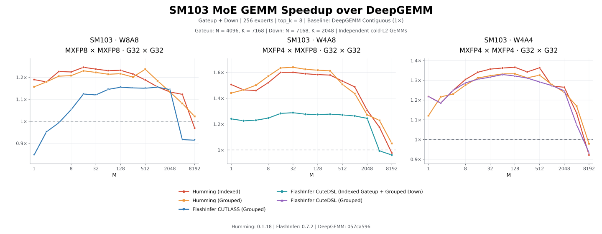
These gains also extend to SM120 and SM121. In the results below, Humming's MXFP4 × MXFP8 W4A8 and NVFP4 × NVFP4 W4A4 outperform FlashInfer CUTLASS at most tested points. On SM121 at small batch sizes, performance gains reach approximately 19% for W4A8 and 9% for W4A4; on SM120, Humming also leads across most tested sizes. The unified architecture brings these low-precision inference optimizations to more devices, extending efficient quantized computation beyond the datacenter.
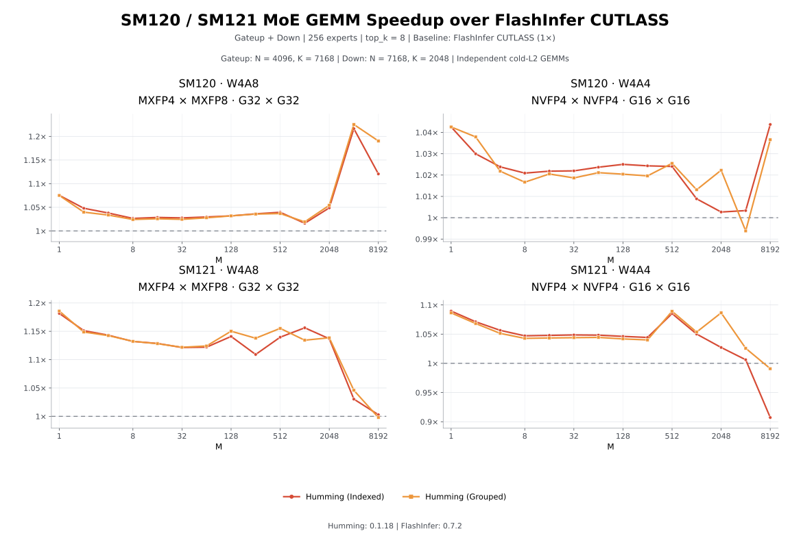
End-to-End Inference Performance
Humming's W4A8 gains extend to model serving. In our DeepSeek-V4.1-Flash test on eight H20 GPUs with TP=8, keeping the model's MXFP4 weights unchanged and switching MoE execution from Marlin W4A16 (BF16 activations) to Humming W4A8 (tokenwise FP8 activations) improves end-to-end throughput by approximately 14%–43% and reduces mean time to first token (TTFT) by approximately 25%–32%. The throughput advantage grows with concurrency: at concurrency 64, output throughput rises from 442.37 to 633.94 tokens/s, while mean time per output token (TPOT) falls by approximately 31%.
| Concurrency | MoE backend | Input throughput (tokens/s) ↑ | Output throughput (tokens/s) ↑ | TTFT (ms) ↓ | TPOT (ms) ↓ |
|---|---|---|---|---|---|
| 1 | vLLM Marlin W4A16 | 2827.15 | 88.30 | 543.13 | 9.24 |
| 1 | Humming W4A8 | 3226.23 (+14.1%) | 100.77 (+14.1%) | 383.80 (-29.3%) | 8.46 (-8.5%) |
| 2 | vLLM Marlin W4A16 | 4781.06 | 149.33 | 794.31 | 10.33 |
| 2 | Humming W4A8 | 5646.98 (+18.1%) | 176.38 (+18.1%) | 555.66 (-30.0%) | 9.20 (-10.9%) |
| 4 | vLLM Marlin W4A16 | 7427.64 | 231.99 | 1422.32 | 11.72 |
| 4 | Humming W4A8 | 9160.81 (+23.3%) | 286.12 (+23.3%) | 971.74 (-31.7%) | 10.22 (-12.9%) |
| 8 | vLLM Marlin W4A16 | 9190.03 | 287.04 | 2049.81 | 19.90 |
| 8 | Humming W4A8 | 12263.89 (+33.4%) | 383.04 (+33.4%) | 1386.91 (-32.3%) | 15.49 (-22.2%) |
| 16 | vLLM Marlin W4A16 | 11124.67 | 348.96 | 2463.69 | 36.28 |
| 16 | Humming W4A8 | 15171.00 (+36.4%) | 475.89 (+36.4%) | 1844.71 (-25.1%) | 26.44 (-27.1%) |
| 32 | vLLM Marlin W4A16 | 12669.43 | 398.83 | 3546.74 | 66.44 |
| 32 | Humming W4A8 | 17804.79 (+40.5%) | 560.49 (+40.5%) | 2465.47 (-30.5%) | 47.48 (-28.5%) |
| 64 | vLLM Marlin W4A16 | 13937.42 | 442.37 | 5467.35 | 123.25 |
| 64 | Humming W4A8 | 19973.00 (+43.3%) | 633.94 (+43.3%) | 3882.94 (-29.0%) | 85.70 (-30.5%) |
Usage
Installation
Install Humming with pip:
pip install humming-kernelsHumming uses a CUDA compiler to generate kernels on demand. If no CUDA compiler is available on the system, choose one of the following installation options to include the compilation dependencies for your environment's CUDA major version:
pip install "humming-kernels[cu12]" # CUDA 12
pip install "humming-kernels[cu13]" # CUDA 13Humming itself is extremely lightweight, with simple dependencies and a wheel package of only about 500 KB. On-demand compilation avoids bundling a large collection of precompiled kernels. In principle, any environment capable of running PyTorch 2.7 can also run Humming, making it easy to integrate into existing inference environments.
Using Humming in vLLM
Humming is deeply integrated into vLLM. Starting with vLLM 0.22.0, CUDA installations include Humming as a dependency, so no separate Humming installation is needed. Humming supports NVIDIA GPUs across all architectures from Turing onward (SM75 and above).
The --linear-backend
and --moe-backend
options select Humming as the compute backend for dense GEMM and MoE
GEMM, respectively. For example, enable Humming for both with tensor
parallel size 8:
vllm serve deepseek-ai/DeepSeek-V4.1-Flash-1017 \
--tensor-parallel-size 8 \
--linear-backend humming --moe-backend hummingThe --quantization humming
option is intended only as a compatibility path for formats that Humming
supports but vLLM no longer supports or does not yet support natively,
such as GPTQ INT3. For example, load a GPTQ INT3 checkpoint through this
compatibility path:
vllm serve hfl/Qwen2.5-VL-3B-Instruct-GPTQ-Int3 --quantization hummingSelecting Activation Types
By default, Humming uses the activation type specified in the checkpoint and adapts execution to the device. If the GPU does not support that compute type, Humming falls back to a supported higher-precision type. For example, devices without native MXFP4 support can automatically use FP8, BF16, or FP16 compute paths, allowing the same quantized checkpoint to run across GPU generations.
Users can override the default through vLLM's quantization configuration interface to select an activation type for their deployment. The following example sets the activation type for MoE layers to MXFP8:
vllm serve openai/gpt-oss-20b --moe-backend humming --quantization-config.moe.activation mxfp8Future Plans
Broader and Deeper Device Support
Humming will continue expanding hardware coverage while adapting to the compute and memory capabilities of new devices, helping more platforms realize the performance potential of quantized inference. Priorities include:
- Supporting more Rubin architecture features, including Locality Domains, to further optimize task mapping and data access.
- Extending support to more T-Head PPU devices, including the Zhenwu M890.
- Supporting more devices compatible with CUDA programming, bringing existing quantization formats, kernel components, and tuning capabilities to additional hardware platforms.
Adding Autotune
With targeted tuning, Humming can already achieve state-of-the-art performance in most scenarios. However, the wide range of model shapes, quantization configurations, and device resources makes it difficult for heuristics to select the optimal configuration in every case.
Humming therefore plans to introduce autotune, benchmarking candidate configurations on the target device to find better execution parameters for each workload. Autotune will complement existing heuristics, reducing manual configuration search and helping more workloads approach the kernels' best achievable performance.
Deeper Integration with Inference Frameworks
Humming will continue deepening its integration with inference frameworks such as vLLM, expanding support across quantized model loading, backend selection, parallel inference, runtime scheduling, and device adaptation. We aim to make more quantization methods work with the full range of framework capabilities, including optimizations such as quantized All-to-All (A2A) communication for expert parallelism (EP). These efforts will make high-performance quantized kernels easier to use across diverse deployment scenarios and help translate kernel performance gains into end-to-end inference benefits.
Acknowledgments
We thank Jinzhen Lin, Zekai Gu, and Zhilin Huang from Ant Group, as well as Michael Goin, Roberto L. Castro, Chauncey Jiang, and other members of the vLLM community, for their contributions and support throughout Humming's development.
We also thank the vLLM community for providing development, testing, and CI resources that made it possible to validate and improve Humming across a wide range of hardware and workloads.
Humming's design and optimization draw inspiration from Marlin, vLLM Marlin, LMDeploy, DeepGEMM, FlashInfer, CUTLASS, and other open-source projects. We are grateful to their authors and contributors for sharing their ideas and implementations, helping advance high-performance quantized inference for the entire community.